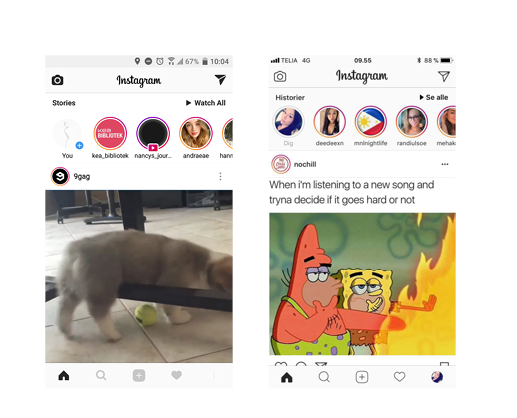

IOS vs Androis - Instagram
- Push beskeder: Ja
- Offline mode: Nej
- Bluetooth og NFC: Nej
- Lyssensor: Ja hvis man indstiller telefonen til at regulere lysstyrken alt efter belysningen
- Kamera/lydoptagelser: Ja
- Vibrering: Ja, hvis man sætter ens telefon på lydløs
- Kontakter: Ja
Brugssituation
- Slå noget op/find noget: Ja, personer og lokationer
- Udforsk/spil: Nej
- Check-in/status: Ja
- Rediger/opret: Ja
Brugskontekst
- Brugen af Instagram varierer i forhold til hvilken slags bruger man tænker på. Brugerne kan være virksomheder eller private.
Den almen bruger anvender typisk Instagram i deres fritid, hvori virksomheder bruger appen hver eneste dag og interagerer mere end den almen bruger.
Android - Iphone
Der er få designe forskel såsom farver og størrelser
AOF
- Man kan lægge stories op, redigere billeder, 'like' billeder og kommentere på andres billeder. Man kan også følge forskellige bruger og sende billeder. Appen kan synkronisere ens kontakter fra facebook